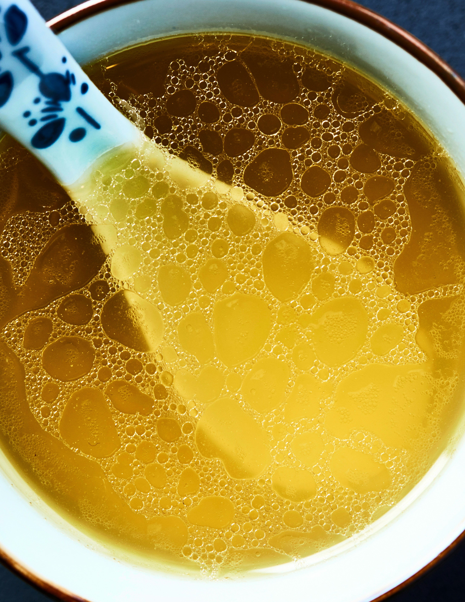

Home
Bone Broth

Photo by Alex Bayev on Unsplash
Ingredients
- 1kg Stock bones
- 1 Onion
- 1 Carrot
- 2 Celery stalks
- Tomato paste
- Cinnamon
- Star anise
- 2 Bayleaves
Steps
- Preheat oven to 220C
- Lay your stock bones in one layer on a baking sheet, and roast for about 30-45 minutes
- Turn them over and add the vegetables and drizzle with some oil, roast for another 30 min
- Add your bones and vegetables to a big pot
- Add some water to your baking sheet and scrape up all the bits
- Pour the fond and water from the baking sheet and add to the pot with the rest
- Fill with water so it covers everything
- Simmer for atleast 4 hours, take off the scum that rises to the top throughout the process
- Strain into containers and let it cool down a bit before putting it in the fridge or freezing it